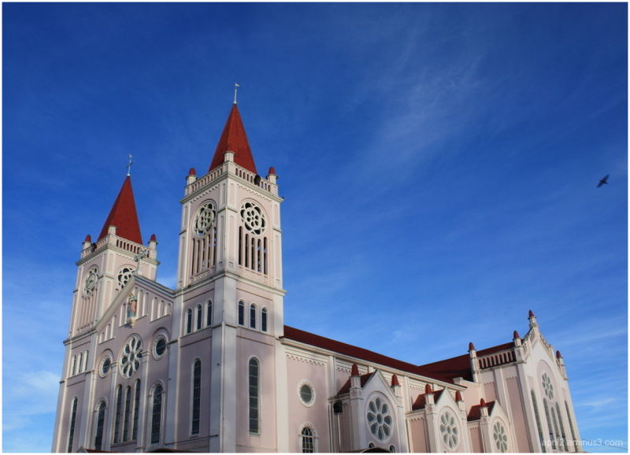

History of Baguio
Baguio City, often referred to as the "Summer Capital of the Philippines," holds within its embrace a tapestry of history that spans centuries, weaving together the narratives of indigenous peoples, colonial powers, and contemporary developments. Its story unfolds against the backdrop of the majestic Cordillera Mountains, which have been home to various indigenous tribes such as the Ibalois, Igorots, and Kankanaeys for countless generations.
These resilient communities cultivated the land, traded goods, and forged cultural traditions long before the arrival of external influences. The arrival of Spanish colonizers in the Philippines in the 16th century marked a significant shift in the region's dynamics. While the Spanish presence was felt in surrounding areas, the rugged terrain of the Cordilleras made it difficult for them to establish a foothold in what is now Baguio City. Consequently, the indigenous peoples of the region retained much of their autonomy and cultural practices. However, it was during the American colonial period in the late 19th century that Baguio's trajectory altered dramatically. In 1900, the American colonial government recognized the potential of the area as a cool retreat from the tropical lowlands and designated it as a hill station. Renowned American architect and urban planner Daniel Burnham was tasked with designing a city plan that would transform Baguio into a modern urban center. Burnham's vision encompassed wide roads, parks, and European-inspired architecture, laying the foundation for the city's future development. Under Burnham's blueprint, Baguio flourished into a vibrant hub of activity, attracting American officials, missionaries, and tourists seeking refuge from the oppressive heat of the lowlands.

Institutions such as the University of the Philippines Baguio and the Baguio Cathedral emerged as prominent landmarks, reflecting the city's growing importance as an educational and religious center. Baguio's ascent as a premier destination, however, was not without its challenges. The tumult of World War II and the subsequent Japanese occupation brought devastation and hardship to the city and its inhabitants. The war exacted a heavy toll on Baguio, leaving scars that would linger for years to come. Yet, amidst the rubble and ruins, the spirit of resilience prevailed, and Baguio began to rebuild and reimagine itself once more.
The post-war era saw the emergence of Camp John Hay, a former American military base turned tourist destination, further solidifying Baguio's status as a premier getaway spot. As the city entered the latter half of the 20th century, rapid urbanization and population growth presented new challenges. Concerns over environmental degradation and infrastructural strain surfaced as Baguio grappled with the demands of progress. Despite these challenges, Baguio's allure remained undiminished. Its scenic beauty, vibrant markets, and rich cultural heritage continued to draw visitors from far and wide, infusing the city with a dynamic energy that defied its small size. Today, Baguio City stands as a testament to the resilience of its people and the enduring legacy of its storied past. As the 21st century unfolds, Baguio confronts the dual imperatives of preserving its heritage and embracing sustainable development. Efforts to balance economic growth with environmental stewardship have become increasingly paramount as the city navigates the complexities of modernization. Yet, amidst the complexities of the present, Baguio remains a beacon of hope and possibility, a city where the echoes of the past reverberate alongside the promise of the future.
Delving deeper into the history of Baguio City unveils a multitude of layers that enrich its narrative. Before the arrival of Spanish colonizers, the Cordillera region, including what is now Baguio, was inhabited by various indigenous tribes, each with their own distinct cultures and traditions. Among these were the Ibalois, Igorots, Kankanaeys, and Ifugaos, who thrived in the mountainous terrain through subsistence agriculture, intricate terracing systems, and vibrant oral traditions that preserved their heritage. The Spanish colonization of the Philippines in the 16th century had a limited impact on the Cordillera region due to its geographic isolation and the fierce resistance of its indigenous inhabitants. While Spanish missionaries ventured into nearby lowland areas, attempts to convert the mountain tribes were met with resistance, preserving much of their traditional way of life. It wasn't until the late 19th century, during the American colonial period, that Baguio began its transformation into a modern city. In 1899, the Americans established Baguio as a hill station, recognizing its strategic location and cool climate as ideal for a retreat from the sweltering heat of the lowlands. Daniel Burnham's comprehensive city plan, developed in 1900, laid the groundwork for Baguio's development, incorporating wide roads, parks, and a distinct architectural style that blended American and European influences. The early 20th century saw Baguio evolve into a bustling urban center, attracting American officials, businessmen, and missionaries, as well as Filipino elites seeking leisure and education. The city's rise to prominence was further propelled by the opening of Kennon Road in 1905, providing easier access from Manila and other lowland provinces. Baguio's status as a cultural and educational hub was solidified with the establishment of various institutions, including the Baguio Country Club, Teachers' Camp, and Brent School. These institutions not only provided amenities for leisure and education but also contributed to the city's cosmopolitan atmosphere, attracting a diverse population from across the Philippines and abroad. The onset of World War II brought significant challenges to Baguio as the city became a strategic target for Japanese forces. The Battle of Baguio in 1945 resulted in widespread destruction, with many iconic structures reduced to rubble. The post-war years were marked by efforts to rebuild and revitalize the city, spurred by initiatives such as the Baguio Rehabilitation Plan. Throughout the latter half of the 20th century and into the 21st century, Baguio experienced rapid urbanization and population growth, accompanied by challenges such as traffic congestion, environmental degradation, and strains on infrastructure. Efforts to address these issues have been ongoing, with initiatives focusing on sustainable development, environmental conservation, and heritage preservation. Despite the modern challenges it faces, Baguio City remains a beacon of cultural richness, natural beauty, and historical significance. Its vibrant markets, festivals, and thriving arts scene continue to attract visitors, while its indigenous heritage and colonial legacy lend depth and texture to its identity. As Baguio continues to evolve, its history serves as a reminder of the resilience and adaptability of its people, who have weathered centuries of change while retaining the essence of what makes Baguio truly special.